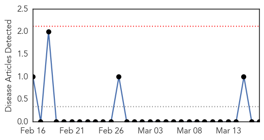
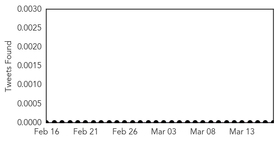
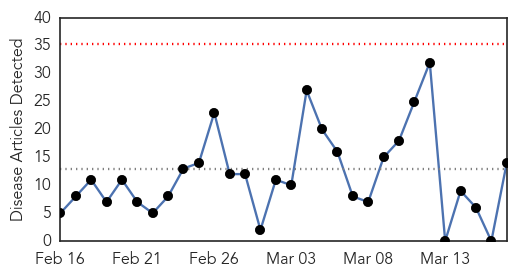
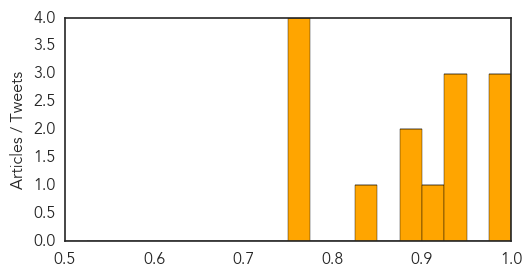

Yellow Fever
30-Day Web Trend
0 alerts, 0 warnings

30-Day Twitter Trend
0 alerts, 0 warnings

Article Locations

Article Confidences

Top Articles:
-
No articles found for Mar 17, 2015
Top Tweets:
-
No tweets found for Mar 17, 2015
Influenza
30-Day Web Trend
0 alerts, 0 warnings

30-Day Twitter Trend
0 alerts, 0 warnings
Article Locations

Article Confidences
Top Articles:
- 0.994
- Flu cases rise across region as they fall statewide: News
- 0.991
- No bird flu scare in UP, says government
- 0.988
- Free flu vaccines for Indigenous children as experts warn of dangerous flu season ahead
- 0.946
- 'Bad strain' of flu from northern hemisphere could be coming to Australia
- 0.938
- Flu vaccinations delayed
- 0.926
- No bird flu scare in UP, says government
- 0.922
- N600m compensation coming for farmers affected by avian influenza
- 0.882
- Bird flu: Dudhwa National Park on high alert
- 0.880
- Bird flu: Dudhwa National Park on high alert
- 0.832
- Bird flu: FG earmarks N600m compensation to farmers
- 0.757
- Free flu vaccines for Indigenous children
- 0.751
- March 17, 2015 Archives
- 0.751
- March 17, 2015 Archives
- 0.751
- March 16, 2015 Archives
Top Tweets:
-
No tweets found for Mar 17, 2015